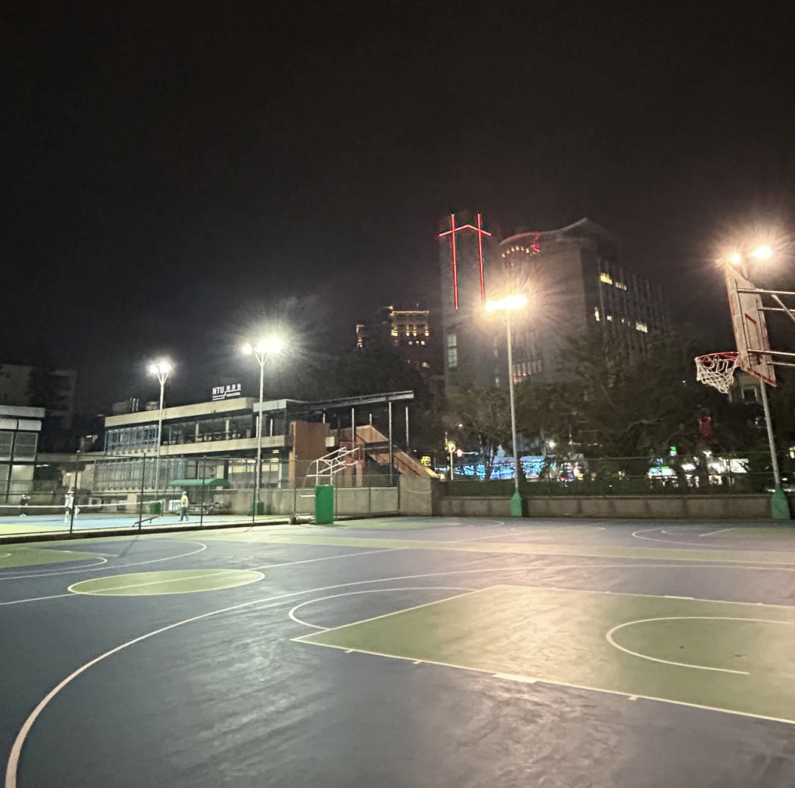
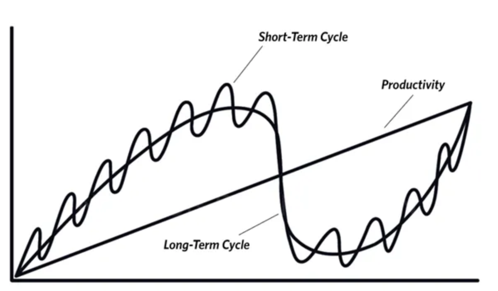
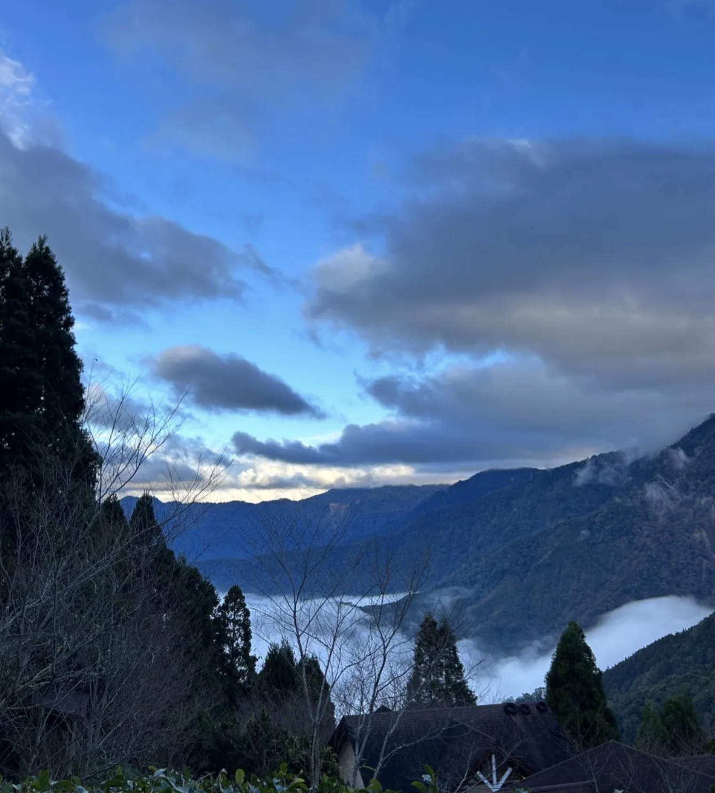
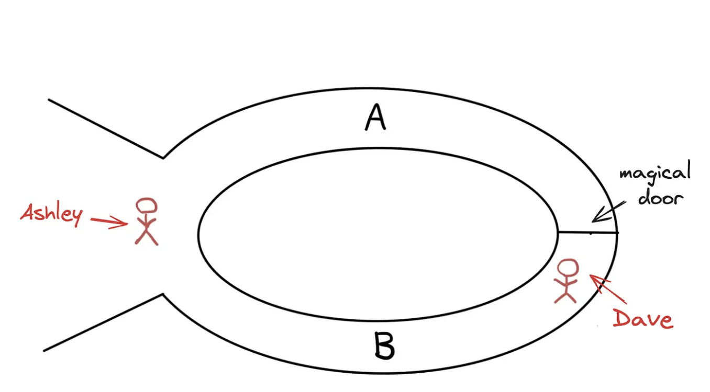

Reflections from gap year (2023-2024). Written in Mandarin.

Investment philosophies of Ray Dalio and Chris Martenson. Or possibly, life philosophies.
Investment philosophies of Charlie Munger and Marcus Aurelius. Or possibly, life philosophies.

Is the Bitcoin hype here to stay? Not so fast.

Reflections from gap year (2023-2024). Written in Mandarin.

Sure there’s machine learning and all that, but what the heck is zero-knowledge machine learning (zkML)?
Is cryptocurrency a scam or is it a legitimate alternative to state-corrupted money? Political elites want to eliminate it altogether, but that alone should tell us we need to better understand this alternative money source.
Poverty. Corruption. Warfare. Why are these issues so prevalent? Is there a framework underlying socio-economic forces? In essence, how does our society work? Accredited by scholars from Academia Sinica, Mises Institute, and other institutes, this book seeks to answer these fundamental questions.
Between its political happy talk in the contrast to reality and its broken promises, whatever credibility the Fed had in the past is long gone.
Amid the rapid rise of political sectarianism, the modern presidency has become a divider rather than a mender.